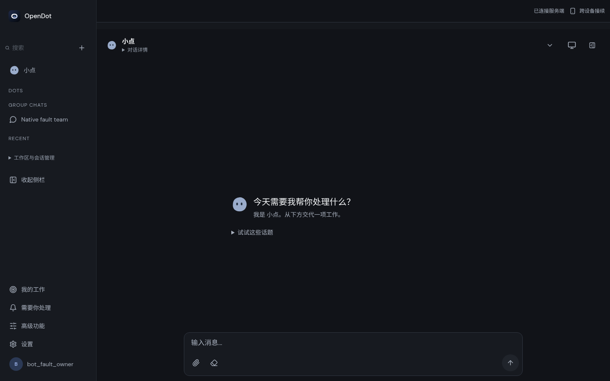

找回上次的决定
在同一个工作区重新提问，Dot 会按问题检索已保存的记忆。聊天活动中可查看载入数量和修订号。

在同一个工作区重新提问，Dot 会按问题检索已保存的记忆。聊天活动中可查看载入数量和修订号。
勾选每周执行日和时间，保存前预览接下来三次触发。运行日程按设备上的日期展示下一次执行。
需要授权时，打开审批面板查看请求，再决定是否允许继续执行。查看移动端界面 ↗
准备 Git、Node.js 22.19 或更高版本、npm 和 GNU Make。使用容器模式时还需 Docker。
启动后打开 http://127.0.0.1:3000，按页面引导创建管理员并配置模型服务。
git clone https://github.com/xuilen/OpenDot.git
cd OpenDot
npm install
npm --prefix web install
npm --prefix container/agent-runner install
npm run build:all
npm start